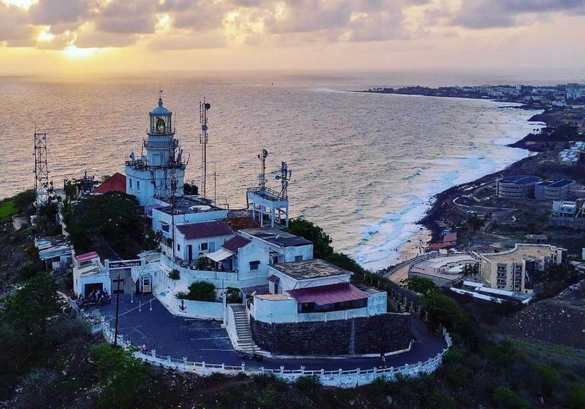
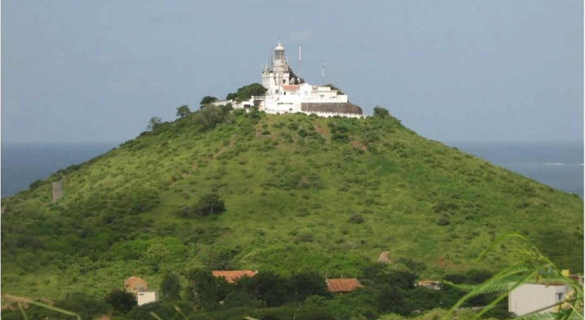
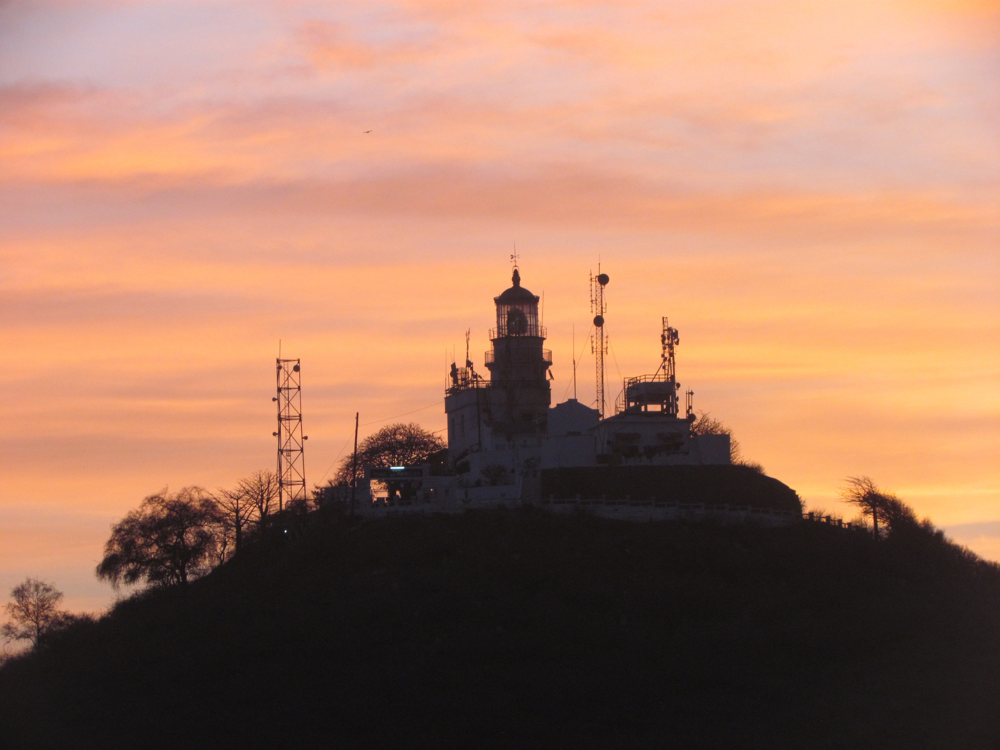

Phare des Mamelles


Le phare des mamelles est une phare situé sur la presqu'île du Cap Vert, à environs 4km au sud-est de la pointe des Almadies dans la ville de Dakar,
sur la plus occidentale et la plus grande des deux collines volcaniques coniques nommées les Mamelles .C'est le plus ancien phare de Dakar, considerée
comme le plus puissant d'Afrique avec celui du cap de Bonne-Esperance.


De la colline rocheuse considérée comme le point culminant de Dakar et du Sénégal occidental. On peut bénéficier d'une vue panoramique sur l'ensemble
de la presqu'île, notamment la pointe des Almadies ,Ngor, Ouakam, le Monument de la renaissance africaine ou les îles de la Madeleine, sans parler de la capitale
elle même
Retour à la page d'accueil